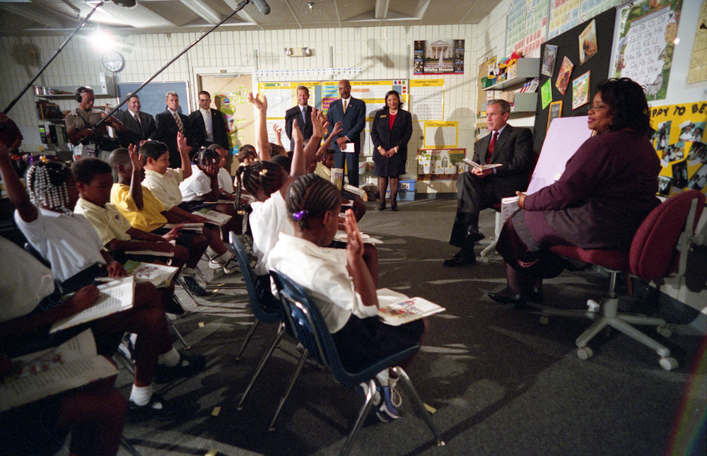
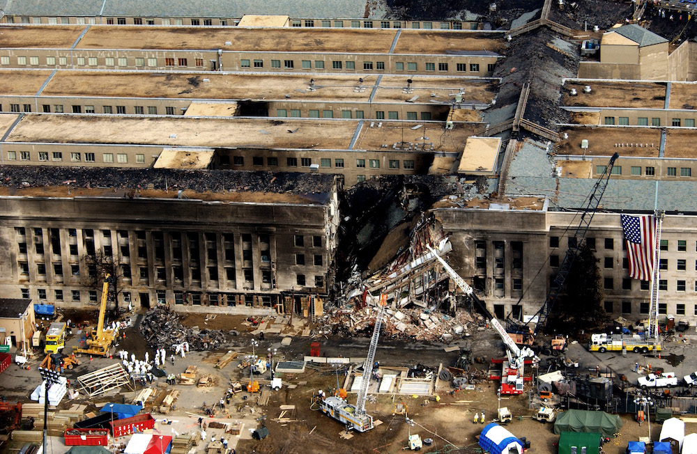
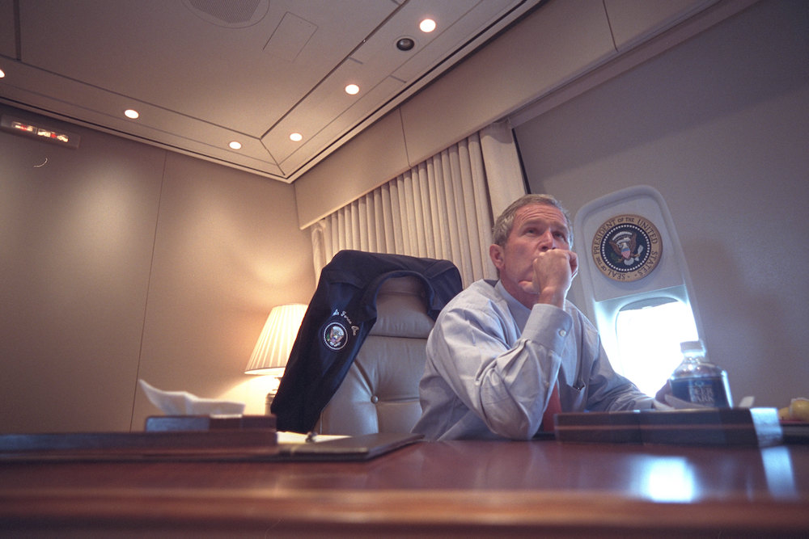
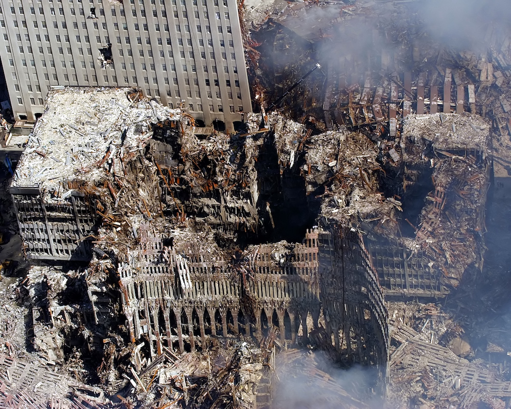
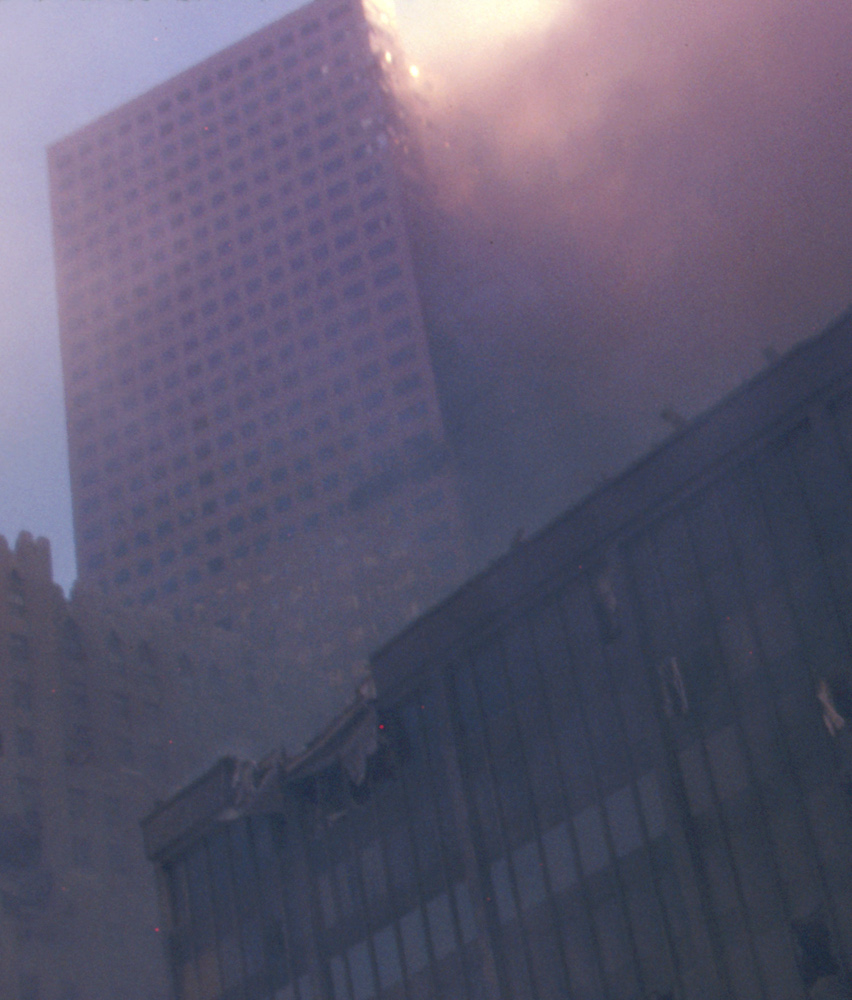

-
AA11 departs Boston, headed for Los Angeles
On board the Boeing 767 are 81 passengers and 11 crew.
-
UA175 departs Boston, headed for Los Angeles
On board the Boeing 767 are 56 passengers and 9 crew.
-
AA11 is hijacked
Five hijackers gain control of the aircraft, turning the plane south.
-
AA77 departs Washington, headed for Los Angeles
On board the Boeing 757 are 58 passengers and 6 crew.
-
UA93 departs Newark, headed for San Francisco
On board the Boeing 757 are 37 passengers and 7 crew.
-
UA175 is hijacked
Five hijackers gain control of the aircraft, turning the plane to the northeast.
-
AA11 strikes the North Tower
-
AA77 is hijacked
Five hijackers gain control of the aircraft, turning the plane to the southeast.
-
President Bush arrives at Emma E. Booker Elementary School
The President is reading a story to students when he first learns of the attacks.
 -
UA175 strikes the South Tower
The plane strikes at 590 mph (950 kph) between floors 77 and 85.

-
UA93 warned of earlier hijackings
The pilots do not understand the warning and ask for clarification.
-
UA93 is hijacked
Four hijackers seize control of the plane.
-
UA93 passengers learn of WTC attacks
In phone calls with family on the ground, passengers on Flight 93 learn that two hijacked planes have already been crashed. They realize that their situation is likely connected, and begin planning to retake the plane.
-
AA77 strikes the Pentagon
The plane strikes a the building at 530 mph (850 kph). It impacts a recently-renovated portion of the building, which is still mostly unoccupied. Even so, 125 people in the Pentagon are killed.
 -
President Bush boards Air Force One
Air Force One lifts off in Florida to ensure the President's safety. They do not have a plan about where to go.
 -
UA93 passengers revolt
After voting on whether to act, passengers rush from the rear of the plane towards the front. The hijackers begin tipping the plane forwards and backwards in defense, as passengers begin trying to break into the cockpit. It remains unclear if they succeeded.
-
South Tower falls
-
UA93 crashes
As passengers rush the cockpit and struggle to regain control of the plane, the hijackers deliberately crash it in a field in southwestern Pennslyvania. Flight 93 was about 20 minutes from reaching Washington, D.C.
-
North Tower falls
After burning for 1 hour and 42 minutes, the North Tower collapses. Because the impact severed all three stairwells, no one above the impact site escapes. A worldwide audience views the collapse live on television.
 -
7 WTC falls
